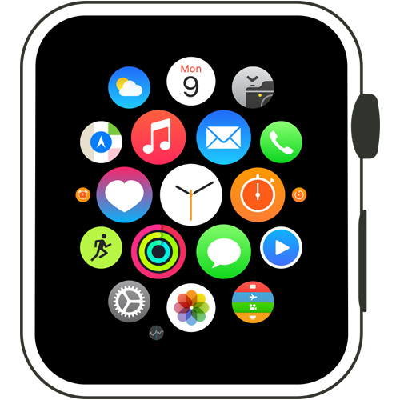
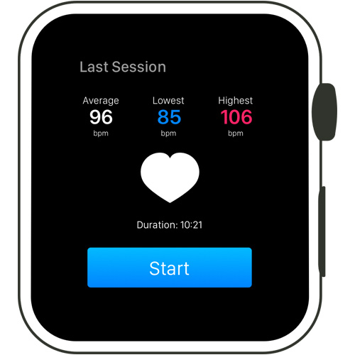
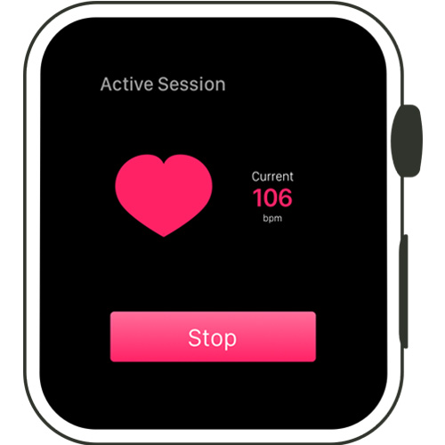

Now Viewing:
Calm App
Role: Creator Skills Used: Identifying Problems, Sketches, Designing, Animations.
When you’re at the table playing live poker, your opponents are always looking for a ‘tell.' What’s a tell? A ‘tell’ is a behaviour or action you display unintentionally when you’re in the process of playing a hand. Some players start playing with their chips when excited; others might put their hands up to their face. Regardless of what you do, you’re giving your opponents at the table an idea as to what you’re holding. I designed the Calm App to act as a reminder for players to not give away ‘tells.' When their heart rate increases, the Apple Watch will vibrate. This helps keep them aware and avoid any unnecessary chip play or face touching.
Ultimately this app doesn’t have to be used for poker. I decided to go down that niche because I thought it would be an easy market to break into as poker players don’t have enough unique Apps available to them.
This version is an MVP. Some useful additions would be:
If you want to see some amazing poker reads I recommend this video.
Copyright 2018 - Jessejohnston.co. All client work is property of the specified client.